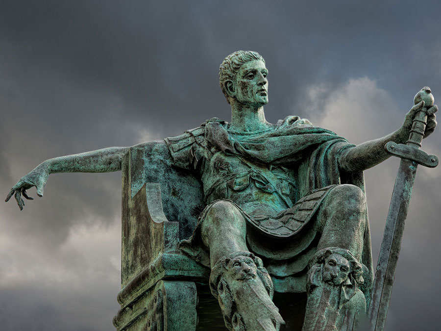

Constantine I, aka Constantine the Great, was Roman emperor from 306 to 337 CE. Realizing that the Roman Empire was too large for one man to adequately rule, Emperor Diocletian (284-305 CE) split the empire into two, creating a tetrachy or rule of four. While he ruled the east from Nicomedia as an "augustus" with Galerius as his "caesar," Maximian and Constantius the Pale ruled the west. It was the son of Constantius, Constantine, who would one day rise to defeat all challengers to the throne and reunite the split empire, moving the capital away from Old Rome and build a new eastern capital, a capital that one day would bear his name, Constantinople.
During his years of warfare in the west he had always demonstrated religious tolerance with both pagans and Christians (he claimed to be a Christian since 312 CE). His mother Helena was a devout Christian, and after Constantine became emperor, he sent her on a pilgrimage to the Holy Land where she had built the Church of the Nativity at Bethlehem. Although he had been a worshipper of the sun-god in his youth and while some claim he did not become baptized until his deathbed, he still gave every indication that he was a devoted Christian. He is even credited by many historians with making Christianity the official religion of the empire (although others credit Emperor Theodosius), despite the fact that pagan symbols of Sol Invictus and Mars appeared on his coins. While he tolerated certain pagan religious practices, religious freedom had its limits, pagan sacrifices were forbidden, temple treasures seized, gladiatorial contests ended (Christians disliked them), crucifixions were abolished, and laws were enacted against sexual immorality and ritual prostitution.
Possible year of Emperor Constantine's birth.
Constantius the Pale (father of Constantine I ) dies.
Constantine I named "caesar" of the west.
Roman emperor Constantine I tolerates Christianity.
Constantine defeats Maxentius at Milvian Bridge.
Constantine I disbands the Praetorian Guard.
Constantine I reduces the cohortes urbanae of Rome.
The Edict of Milan enacted by Constantine I.
The Basilica of Maxentius & Constantine is completed in Rome's Forum Romanum.
Arch of Constantine I built in Rome to commemorate victory over Maxentius in 312 CE.
The Baths of Constantine I in Rome are completed.
Constantine I defeats Licinius at Chrysopolis.
Roman Emperor Constantine I calls the Council of Nicaea.
Constantinople is founded on the site of old Byzantium as "the new Rome."
Death of Emperor Constantine I.